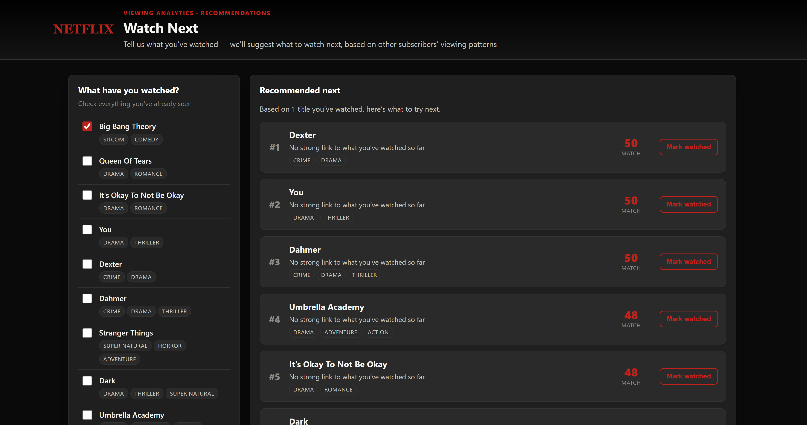
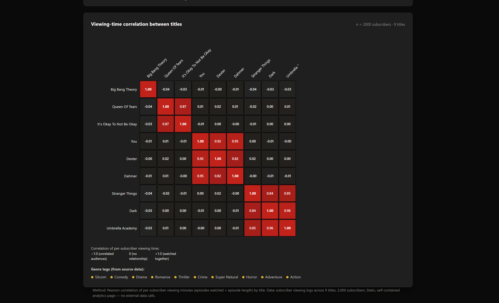

A personalised "watch next" recommender built from real subscriber viewing data — check off what you've already watched, and it suggests what to try next based on how strongly your picks correlate with other titles in other subscribers' viewing habits.

Check off titles you've already watched, and the app ranks every remaining title by correlated viewing time, showing a match score, genre tags, and a plain-language reason for each recommendation.

A 9×9 heatmap of Pearson correlation between titles' per-subscriber viewing time, ordered by genre group so titles that share an audience sit together on the diagonal.
Rather than recommending by genre tags alone, this project measures actual co-viewing behaviour: how much time subscribers who watch one show also spend watching another. That signal is turned into a Pearson correlation matrix, which powers two complementary tools built on the same data.
Raw per-subscriber viewing logs were cleaned and aggregated in Excel — episodes watched × episode length — pivoted into a subscriber × show matrix, then correlated pairwise across all nine titles to reveal which shows are watched together.
Recommending by genre alone ignores how audiences actually overlap — two dramas can have completely unrelated viewers.
Generic recommenders rarely explain themselves, leaving subscribers unsure why a title was suggested to them.
There was no easy way to see, at a glance, which titles share an audience and which are watched by completely different subscribers.
Per-subscriber, per-show viewing logs converted into total minutes watched (episodes watched × episode length).
Minutes reshaped into a subscriber × show matrix, with average viewing time calculated per show across all subscribers.
Pearson correlation of total minutes watched computed between every pair of shows, revealing which titles are watched together.
The correlation matrix, genre tags, and viewing stats embedded directly into two self-contained HTML pages — a recommender and a heatmap — with no server or external calls.
You, Dexter, and Dahmer correlate at 0.92–0.95 — subscribers who watch one overwhelmingly watch the others too.
Dark and Umbrella Academy correlate at 0.96, with Stranger Things joining the cluster at 0.84–0.85.
Queen Of Tears and It's Okay To Not Be Okay correlate at 0.87, but show almost no overlap with any other genre cluster.
As the only sitcom in the set, it shows near-zero correlation with every other title — its viewers don't overlap meaningfully with any other genre.
Feature crime/thriller and supernatural titles together in rows and promotions — their audiences already overlap heavily.
Queen Of Tears and It's Okay To Not Be Okay viewers don't cross over elsewhere — worth dedicated acquisition and retention content.
Actual viewing-time correlation is a stronger recommendation signal than static genre labels, and should feed production and licensing decisions too.
Showing subscribers *why* a title was suggested (e.g. "because you watched Dark") builds trust and encourages engagement with new content.
Big Bang Theory's isolated audience suggests an opportunity to test more sitcom titles without cannibalising existing viewership elsewhere.
Expanding beyond 9 titles and 2,000 subscribers would sharpen the correlation signal and surface more nuanced micro-clusters.